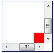

KB010: 常规流( Normal flow )
格式化上下文( Formatting context )
格式化上下文指的是初始化元素定义的环境。包含两个要点，一个是元素定义的环境，一个是初始化。
在 CSS 中，元素定义的环境有两种，一种是块格式化上下文( Block formatting context )，另一种是行内格式化上下文( Inline formatting context )。 这两种上下文定义了在 CSS 中元素所处的环境，格式化则表明了在这个环境中，元素处于此环境中应当被初始化，即元素在此环境中应当如何布局等。
以上解释专业点的说法是：在常规流中的框，都属于一个格式化的上下文中。
这个上下文可能是块的，也可能是行内的，但不可能同时是行内的又是块的。块框1参与块格式化上下文。行内框1参与行内格式化上下文。
注：
- 关于块框和行内框，请参见 W3C CSS2.1 - 9.2 Controlling box generation
块格式化上下文( Block formatting context )
触发方式
浮动元素、绝对定位元素，'display' 特性为 "inline-block"，"table-cell"， "table-caption" 的元素，以及 'overflow' 不是 "visible" 的元素，会创建新的块格式化上下文。
- 浮动元素
- 绝对定位元素
- 行内块元素
- 单元格
- 表格标题元素
- overflow 非 "visible"的元素
注意，是这些元素创建了块格式化上下文，它们本身不是块格式化上下文。
作用及现实意义
块格式化上下文是一个比较抽象的概念。可以把它想象成一个大箱子，很多元素装在里面，箱子把它们和外面的元素隔开。
块格式化上下文是个重要的概念，它对宽高的计算，外边距折叠，定位等都有一定的影响。
在块格式化上下文中，框会一个接一个地被垂直放置，它们的起点是一个包含块的顶部。 两个兄弟框之间的垂直距离取决于 'margin' 特性。在块格式化上下文中相邻的块级元素的垂直外边距会折叠( collapse )。
在块格式化上下文中，每一个元素左外边1与包含块的左边相接触（对于从右到左的格式化，右外边接触右边）， 即使存在浮动也是如此（尽管一个元素的内容区域会由于浮动而压缩），除非这个元素也创建了一个新的块格式化上下文。
它与普通的块框类似，不同之处在于：
- 可以包含浮动元素2
- 可以阻止外边距折叠3
- 可以防止元素被浮动元素覆盖4
CSS3 草案中的 "flow root" 5
在 CSS3 中，对块格式化上下文这个概念做了改动，将 "Block formatting context" 叫做 "flow root"。
对于触发方式也做了修改，更加准确：
The value of 'position' is neither "static" nor "relative".
可见，CSS3 草案中的对触发方式的描述更加准确，'position' 在 "fixed" 的时候也会创建 "flow root"。这并不是CSS2.1的疏忽， 因为 "position:fixed" 本身就是 "position:absolute" 的一个子类。
注意，"display:table" 本身并不产生 "block formatting contexts"。但是，它可以产生匿名框 6， 其中包含 "display:table-cell" 的框会产生块格式化上下文。 总之，对于 "display:table" 的元素，产生块格式化上下文的是匿名框而不是 "display:table"7。
注：
- 既 left margin 边界，参见 W3Help - KB006: CSS 框模型( Box module ) 第一部分。
- 块格式化上下文的高度计算是包含其浮动子元素的，详见： W3C CSS2.1 - 10.6.7 'Auto' heights for block formatting context roots
- 详见 W3Help - KB006: CSS 框模型( Box module ) 的外边距折叠部分。
- 参照 W3C CSS2.1 - 9.5 Floats 第五小段的内容：
The border box of a table, a block-level replaced element, or an element in the normal flow that establishes a new block formatting context (such as an element with 'overflow' other than 'visible') must not overlap any floats in the same block formatting context as the element itself. - 关于 flow root，见： W3C CSS3 draft - 4.2. Block-level boxes, containing blocks, flows and anonymous boxes
- 关于匿名框，W3C CSS2.1 - 9.2 Controlling box generation
- 参见： Yahoo - CSS 101: Block Formatting Contexts
行内格式化上下文( Inline formatting context )
行框( line boxes )
相对于块格式化上下文，在行内格式化上下文中，框( boxes )一个接一个地水平排列，起点是包含块的顶部。 水平方向上的 margin，border 和 padding 在框之间得到保留。 框在垂直方向上可以以不同的方式对齐：它们的顶部或底部对齐，或根据其中文字的基线对齐。 包含那些框的长方形区域，会形成一行，叫做行框。
示例代码：
<p style="background-color:silver; font-size:30px;">TEXT1<span style="border:3px solid blue;">text in span</span>great1<em style="border:3px solid red;">thx a lot</em>bee<strong style="border:3px solid green;">give me 5!</strong>Aloha!</p>
以上代码中，无换行符及空格，共形成了 7 个行内框。
示意图：

行框的宽度由它的包含块1和其中的浮动元素决定。高度的确定由行高度计算规则决定。
行框的范围
通常，行框的左边接触到其包含块1的左边，右边接触到其包含块1的右边。然而，浮动元素可能会处于包含块1边缘和行框边缘之间。 总之，尽管在相同的行内格式化上下文中的行框通常拥有相同的宽度（包含块1的宽度），它们可能会因浮动元素缩短了可用宽度， 而在宽度上发生变化。同一行内格式化上下文中的行框通常高度不一样（如，一行包含了一个高的图形，而其它行只包含文本）。
示例代码：
<p style="background-color:silver; width:500px; overflow:hidden; ">
<span style="border:1px solid blue; font-size:50px; float:left;">FLOAT</span>
<em style="border:1px solid yellow; font-size:30px;">great1</em>
<span style="border:1px solid yellow;">good</span>
</p>
示意图：
行内框可能被分割
如果几个行内框在水平方向无法放入一个行框内，它们可以分配在两个或多个垂直堆叠的行框中。因此，一个段落就是行框在垂直方向上的堆叠。 行框在堆叠时没有垂直方向上的分割且永不重叠。
如果一个行内框超出包含它的行框的宽度，它会被分割成几个框，并且这些框会被分布到几个行框内。如果一个行框不能被分割（例如， 行内框只包含单个字符，或者语言特殊的断字规则不允许在行内框里换行，或者行内框受到带有 "nowrap" 或 "pre" 值的 'white-space' 特性的影响），这时，行内框会溢出行框。
如果一个行内框被分割，margin、padding 和 border 在所有分割处没有视觉效果。
行内框还可能由于双向文本处理（bidirectional text processing）而在同一个行框内被分割为好几个框。
示例代码：
<p style="background-color:silver; width:100px; ">
<span style="border:1px solid blue; font-size:50px;">text in span</span>
<em style="border:1px solid yellow; font-size:30px; vertical-align:top;">great1</em>
</p>
示意图：
由于行框宽度限制(100px)，第一个 SPAN 元素形成的行内框，被分割成了 3 段。
行内框的对齐
1). 行内框在行框中垂直方向上的对齐
行框的高度总是足够容纳所包含的所有框。不过，它可能高于它包含的最高的框（例如，框对齐会引起基线对齐）。 当一个框 B 的高度小于包含它的行框的高度时，B 在行框中垂直方向上的对齐决定于 'vertical-align'2 特性。 'vertical-align'2 默认值为基线( 'baseline' )对齐。
示例代码：
<p style="background-color:silver; width:500px; ">
<span style="border:1px solid blue; font-size:50px;">text in span</span>
<em style="border:1px solid yellow; font-size:30px; vertical-align:top;">great1</em>
</p>
示意图：
EM 所形成的行内框内容的顶端与行中最高元素的顶外边界对齐。
2). 行内框在行框中水平方向上的对齐
当一行中行内框宽度的总和小于包含它们的行框的宽，它们在水平方向上的对齐，取决于 'text-align' 特性。 如果其值是 'justify'，用户端也可以拉伸行内框(除了 'inline-table' 和 'inline-block' 框)中的空间和文字 。
示例代码：
<p style="background-color:silver; width:500px;overflow:hidden; text-align:center;">
<span style="border:1px solid blue; font-size:50px; float:left;">FLOAT</span>
<em style="border:1px solid yellow; font-size:30px;">great1</em>
<span style="border:1px solid yellow;">good</span>
</p>
示意图：
由图可见，浮动元素缩短了当前的行框，并且行内框在对齐的时候是根据行框的宽度，居中对齐。
空的行内框应该被忽略
不包含文本，保留空白符，margin/padding/border 非0的行内元素，以及其他常规流中的内容(比如，图片，inline blocks 和 inline tables)， 并且不是以换行结束的行框，必须被当作零高度行框对待。就外边距折叠而言，这种行框必须被忽略。
注：
- 关于包含块，请见W3Help - KB008: 包含块( Containing block )
- 关于 'vertical-align'，详见：W3C CSS2.1 - 10.8 Line height calculations: the 'line-height' and 'vertical-align' properties
相对定位( Relative positioning )
在常规流中的占位
一旦一个框按照常规流或者是浮动得到定位，它还可以相对该位置而偏移。 这就是相对定位。按照这种方式偏移一个框(B1)不会对后续的框(B2)有影响：
- B2 在定位时，就好象 B1 没有发生偏移一样
- B1 偏移后，B2 不会重新定位
相对定位元素处于常规流中，相对于元素在常规流中的原位置进行定位，偏移后，在常规流中依然占据原有位置。
这也意味着相对定位可能产生框的重叠1。
注：
- 关于框的重叠，可以参见 W3Help - KB009: CSS 定位体系概述 中关于相对定位的例子， 红色的框 B 将其下面蓝色的框 C 覆盖了
溢出包含块
如果相对定位引起 "overflow:auto" 或 "overflow:scroll" 框的溢出，浏览器必须允许用户访问内容，既，创建需要的滚动条，这可能会影响布局。
<div style="width:100px; height:100px; overflow:auto; border:2px solid blue;">
<div style="width:20px; height:20px; background-color:red; position:relative; top:100px; left:100px;">A</div>
</div>
其中，红色块 A 定位的时候，溢出蓝色框的显示范围。根据标准，应该出现滚动条，以保证用户可以正常的访问 A 中的内容。
示意图：

对相对定位溢出的处理，存在兼容性问题。请读者自行测试。
尺寸
相对定位元素的尺寸，会保持它在常规流中的尺寸。包括换行以及原来为它保留的位置。
定位及计算偏移后的值1
'left' 和 'right' 的特性值
对于一个相对定位的元素，'left' 和 'right' 会水平的位移框而不会改变它的大小。'left' 会将框向右移动，'right' 会将框向左移动。 由于 'left' 或者 'right' 不会造成框被拆分或者拉伸，所以，计算后的值( computed value )总是：left = -right。
1). 'left' 和 'right' 的设定值都是 "auto"
如果 'left' 和 'right' 的值都是 "auto" （它们的初始值），计算后的值( computed value )为 0（例如，框区留在其原来的位置）。
2). 'left' 或 'right' 其一的设定值为 "auto"
如果 left 为 ‘auto’，计算后的值(computed value)为 right 的负值（例如，框区根据 right 值向左移）。 如果 right 被指定为 ‘auto’，其计算后的值(computed value)为 left 值的负值。
示例代码：
<div style="width:20px; height:20px; background-color:red; position:relative; left:100px;"></div>
上述代码中，DIV 元素是相对定位的元素，它的 'left' 值是 "100px"， 'right' 没有设置，默认为 "auto"，那么，'right' 特性计算后的值应该是 -left，即 "right:-100px"。
3). 'left' 和 'right' 设定值都不是 "auto"
如果 'left' 和 'right' 都不是 "auto"，那么定位就显得很牵强，其中一个不得不被舍弃。如果包含块的 'direction' 属性是 "ltr"， 那么 'left' 将获胜，'right' 值变成 -left。如果包含块的 'direction' 属性是 ‘rtl’，那么 'right' 获胜，'left' 值将被忽略。
示例代码：
<div style="width:100px; height:100px; overflow:auto; border:1px solid blue;">
<div style="width:20px; height:20px; background-color:red; position:relative; left:60px; right:60px;"></div>
</div>
最后，'left' 应该比较强悍才对。
'top' 和 'bottom' 的特性值
'top' 和 'bottom' 特性将相对定位元素向上或者向下移动，而不改变其大小。'top' 把框向下移动，而 'bottom' 将其向上移动。 由于 'top' 和 'bottom' 没有造成框被拆分或者拉伸，计算值总是 top=-bottom，如果两个都是 "auto"，其计算值就都是 0，如果其中之一是 auto，它就是另一个的负值。 如果都不是 "auto"，'bottom' 被忽略，这时，'bottom' 的计算值会是 'top' 值的负值。
注：
- 关于设置特性的值，设定值和计算值等，请参见： KB004: 设置 CSS 的特性值
引申阅读
此部分涉及到的部分兼容性问题，请参见以下 W3Help 中的根本原因文章:
- RM8002: 不能在 IE6 IE7 IE8(Q) 中触发 hasLayout 并在其他浏览器中创建 Block Formatting Context 的元素的表现会有差异
- RM8003: 各浏览器中浮动元素与相邻的 Block Formatting Context 之间的关系有差异
测试环境
| 操作系统版本: | Windows 7 Ultimate build 7600 |
|---|---|
| 浏览器版本: |
IE6 IE7 IE8 Firefox 3.6.10 Chrome 7.0.517.0 dev Safari 5.0.2 Opera 10.62 |
| 测试页面: | |
| 本文更新时间: | 2010-09-25 |
关键字
块级格式化上下文 行内格式化上下文 行框 相对定位 right left relative